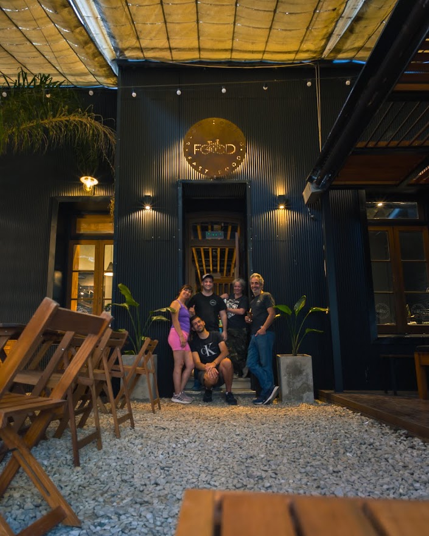
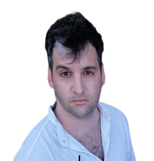
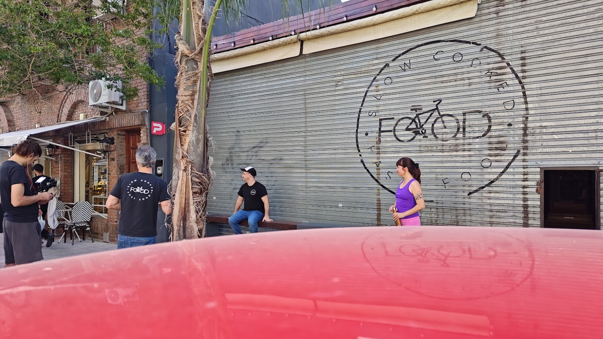
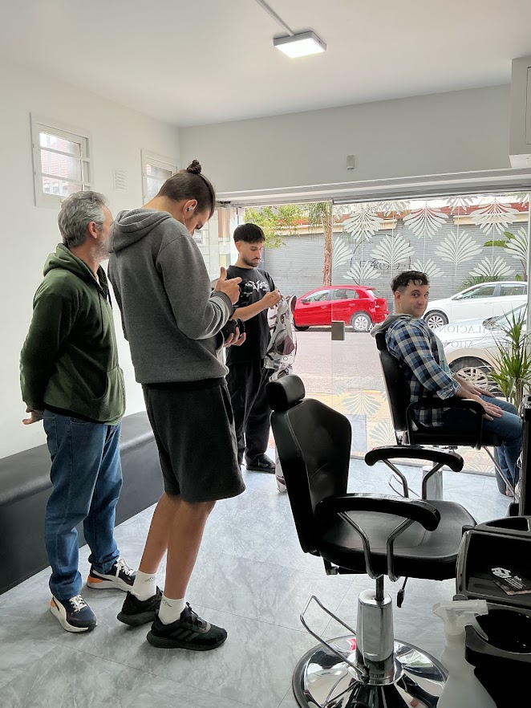
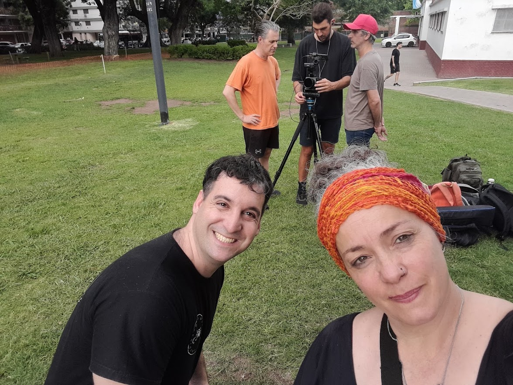

ACTOR · IDIOMAS · CREADOR · WEB
Julián
Ezequiel
Balbi.
Una vida construida entre el escenario, los idiomas, el audiovisual y el mundo digital. Este portfolio reúne lo que aprendí, lo que hago y hacia dónde quiero seguir creciendo.

ACTOR
SPANISH · ENGLISH · ITALIAN · PORTUGUESE · DEUTSCH
PORTFOLIO / 2026
01
Una historia
LA PERSONA DETRÁS DEL PORTFOLIO
Una historia
en movimiento.
Soy Julián Ezequiel Balbi. Me interesa combinar interpretación, comunicación, idiomas, tecnología y creación de contenido.
Estudié teatro durante cuatro años y esa experiencia me enseñó a trabajar con el cuerpo, la voz, la presencia y la construcción de personajes. También estudié inglés y portugués, durante mi infancia, incluyendo lecturas de autores como Hermann Hesse y motivandome a aprender Alemán y leer sobre psicología con Carl Gustav Jung y cada vez que podía adquirir sus volúmenes en Inglés o Portugués en alguna vacación a dichos países, luego intentando expandir hacia el Italiano, me compré una novela poética... o el SteppenWolf (el Lobo estepário de Hesse) y sigo ampliando mi formación con italiano y alemán. Quedaron varados otros como Francés, Arabe, Chino, Japonés... pero algo los abordé. Actuamente puede decirse que soy Trilingue: Español, Portugués e Inglés. Está en desarrollo la película Por Propia Decisión, y participé de otra película como extra. Me está gustando mucho más el Cine o Audiovisual que el teatro. Pero bueno también me gustaría volver a crear material teatral y presentar en teatros nuevamente.
En paralelo, trabajo en el universo digital: participo en tab_, donde desarrollo sitios web, y en proyectos audiovisuales junto a Diagonales Studios.
“No quiero que mi portfolio muestre solamente lo que hice. Quiero que muestre todo lo que todavía puedo hacer.”
01
Teatro4 años de formación actoral
02
IdiomasInglés B1+ · Italiano A1 · Alemán A1
03
TecnologíaDiseño y desarrollo web · tab_
04
AudiovisualContenido, video y proyectos creativos
02
Frente a cámara.
ACTOR / PERFORMANCE
Frente a cámara.
Sobre el escenario.
Empecé a filmar una película, soy el actor principal. Un nombre posible es Por Propia Decisión. Soy dueño de un Bar llamado FOOD, ya que mi padre me da este espacio para aprender a emprender la vida. Me llamo Matias. Mi papá Franco. Tengo madrastra, se llama Debora, la cual me viene a increpar o amenazar ya ue ve que no estoy haciendo buen uso del Bar y ella quiere preservar el Patrimonio. Al cabo de un tiempo empiezo a mejorar el Bar. una historia con conflicto emocional, crecimiento personal y un escenario visual fuerte: un bar como metáfora de identidad y maduración.
Por Propia Decisión Backstage 2025


03
Aprender también
LANGUAGES / LEARNING
Aprender también
es parte del viaje.
🇮🇹 ITALIANOA1
Base inicial · objetivo: seguir avanzando
🇩🇪 DEUTSCHA1
Base inicial · objetivo: seguir avanzando
CAMBRIDGE
A2 · 133
Certificación / resultado
duolingo
●
MI CONSTANCIA
🔥
000
días
JulianEzequiel24
Ver perfil de Duolingo ↗🇬🇧English
🇮🇹Italiano
🇩🇪Deutsch
04
También creo
DIGITAL / AUDIOVISUAL
También creo
fuera del escenario.
01
WEB DESIGN / DEVELOPMENT
↗
tab_
Diseño y desarrollo de páginas web, experiencias digitales y proyectos creativos.
02
+
03
CREATIVE PROJECTS
✦
Ideas que se vuelven experiencias.
Diseño, storytelling, contenido, identidad visual y experimentación digital.
05
¿Qué puedo
SKILLS
¿Qué puedo
hacer?
01ActuaciónTeatro · personaje · cámara · presencia
02IdiomasEspañol · English B1+ · Italiano A1 · Deutsch A1
03ConducciónPresentación · comunicación · cámara
04ManejoConducción de vehículo — editar según corresponda
05WebHTML · CSS · JavaScript · diseño de sitios
06AudiovisualVideo · contenido · edición · narrativa visual
CURRICULUM
Una página no alcanza para contar una vida.
Prepará una versión PDF de tu CV para que productoras, directores, clientes o colaboradores puedan verla rápidamente.
LET'S CREATE SOMETHING
¿Tenés un proyecto
para mí?
Actor · creador · diseñador · estudiante de idiomas.